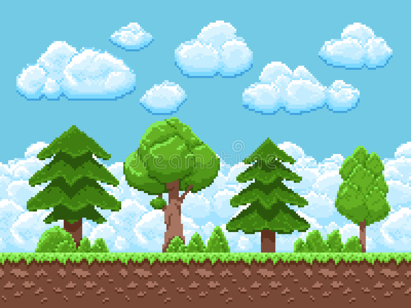

Regresar
5.15
(Transformación con :hover)
Cree un programa de transformación que incluya cuatro imágenes. Cuando el usuario pase el ratón sobre una imagen, el tamaño de ésta debe aumentar por 20%.

 Regresar
Regresar